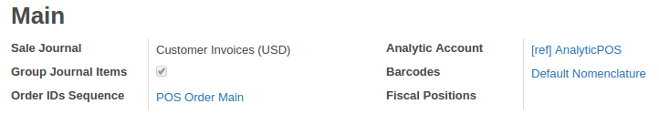
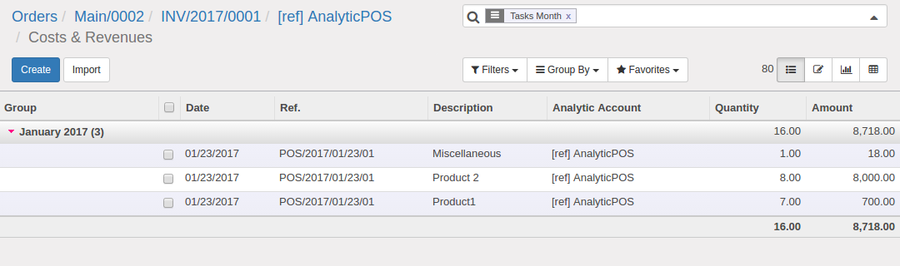

<div class="container">

  <div class="row text-left" style="margin-top: 2em;">
    <div class="col-sm-12">
      <h3>Configure Analytic Account on POS Settings. Analytic entries created on session close.</h3>
    </div>
    <div class="col-sm-12 mt32">
      
    </div>
    <div class="col-sm-12 mt32">
      
    </div>
  </div>

</div>

<div class="container">
    <div class="row">
      <div class="mt16 col-md-11">
        <h3>Need more service?</h3>
        <p data-chatter-id="counter_13960/section/div/div/div">Feel free to write us <a href="mailto:info@erp.co.ua" target="_blank">e-mail</a>.</p><p data-chatter-id="counter_45889/section/div/div/div">Or fill form on our <a href="https://erp.co.ua/page/contactus" target="_blank">website</a>.</p></div></div>
</div>
